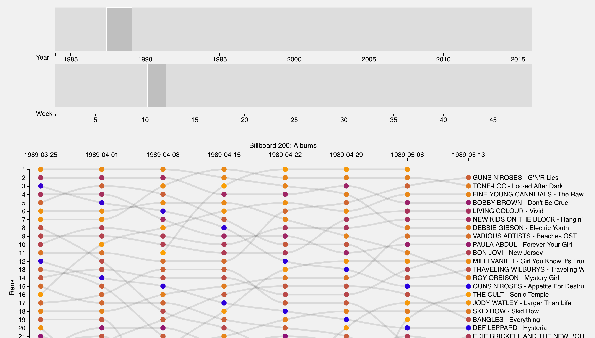

Team Members:
Austin Bricker - 451202 -abricker@wustl.edu
Ethan Jaynes - 443837 - ejaynes@wustl.edu
Alex Cort - 448170 - alexandrecort@wustl.edu
Repository: https://github.com/washuvis/billboardtrends
Screen Capture: https://youtu.be/ZCi_aT0Md_8
Our main motivation was our group members’ mutual interest in seeing musical trends throughout time. During our research for a project, we also noticed that there is a lack of visualizations for musical data, and we thought that we would try our hand at creating a visualization that improved on the pre-existing designs.
The main objective for the project is to create a visualization or a series of visualizations that clearly display musical trends throughout time. This includes things such as visualizing trends in genres, trends in artist dominance over time, and possibly trends in popular covers across different artists. We see several benefits to creating such a visualization. Firstly, the rise and fall of some well-known musical genres are known by most people, but we would like to be able to better visualize these precise changes. Things such as how dominant were certain genres throughout history, at what point could they no longer be considered to be a primary popular style, have there been any revivals of the genre, and so on. We should also be able to see the rise and fall of specific artists, and possibly be identify which artists have lasting appeal, which were one hit wonders, and which had resurgences in popularity over time. As stated before, we discovered that there are not many visualizations this sort of trend information, so we would like our project to fill this gap.
Milestone 2 Update: We initially said we wnted to visualize artists' rise and fall over time. In hindsight, this was not an appopriate goal considering the visualizations we chose and how we implemented them. We would like to add an addendum to our goals, that is to be able to see how albums rise in fall in popularity over a short to medium span of time.
Final Update: Our visualizations are now all using SONG/TRACK data and NOT album data. This means each visualization draws upon historical Billboard 100 data. Our objective shifted back to its original focus of visualizing track/genre popularity over time.
Our main objective when searching for data was to get a dataset that contained a periodic series of data regarding song and artist popularity, going back as far as possible. Popular music sites such as Spotify or Last.fm have large amounts of data for more recent years, but it is difficult to obtain, or is linked to a specific user. We decided to use the Billboard Top 100 hits as they are a consistent musical database with regards to popularity going back to the early 1940’s.
Billboard’s official API has been shut down for a number of years, but we were able to locate a well-maintained database at the “Ultimate Music Database” - http://www.umdmusic.com/. They unfortunately do not offer an API either. However, during our research, we located a Github user who had created a web-scraping script to fetch all of the data from their site: https://github.com/mwkling/umdmusic-downloader.
The dataset contains information about all songs on the Top 100 list for every week (note: the Top 100 was originally the Top 10, then the Top 20 until about 1955). Every entry in the dataset contains things such as artist, title, chart position, last week’s position, total weeks on the chart, etc.
In addition to the information offered by the Billboard data, we also wanted to have information about which genre each of the songs on the charts belonged to. The Last.fm API can provide additional information about the songs in our Billboard dataset, such as genre: https://www.last.fm/api.
In the planning process for the visualization, we envisioned a dataset containing all of the Billboard song charts as far back as they're available, along with the corresponding metadata for every song. This metadata would contain standard information like year, artist, and album, as well as less-accessible information like genre.
To weave together this dataset, we combined Billboard archives from the Ultimate Music Database with data from the Last.fm API. Last.fm is a website that, among other things, crowdsources genre tags for artists and albums. For each song in our dataset, we included the corresponding genre for the artist. We decided that using the genre for the artist instead of album would provide us with the right balance of genre availability and specificity. After reviewing the Last.fm genre results, we also decided to ‘bin’ the genres into some more broad arch-genres, and treat the original raw genre data as the subgenres. For example, we received a wide range of genres across time that could all be categorized under a large umbrella, like punk, alt rock, grunge, etc. could all be considered rock. This allows us to view larger trends in music without losing the finer specifics.
Our main objective is to visualize changes over time. Our visualizations should lend itself to highlighting changes such as changes in Billboard 100 ranking, number of weeks on Billboard 100, popularity of a genre at a given time, etc.
Genre popularity: A streamgraph would be a pretty and simple way to show genre popularity. We likely won’t see large month to month changes in genre popularity, so the streamgraph would probably be on a timescale of 5+ years. Because genre popularity values will likely sum to some constant amount (like 100 for the Top 100), a stacked bar chart could also be used to show the data. Even if the values don’t sum to a fixed value, the bars could be normalized to show that the popularity metrics are out of some relatively fixed whole.
Billboard Ranking: An alluvial diagram similar to this visualization could show ranking changes of songs in the Billboard 100. It could also be used to show genre popularity where the height of a block represents the number of songs of that genre in top 100. Alluvial diagrams are particularly adept at showing data points that flow in and out of the range of data being shown, and this is exactly the case with Billboard songs, artists, and genres.
Update as of Milestone 2: We are no longer using the Billboard 100 for songs, we are instead using the Billboard 200 for albums. We also realized that an alluvial diagram is not the best way to visualize the data. An alluvial diagram would lend itself more to a broad view of the data, and the tile graph and streamgraph are already quite broad. We instead decided to use a bumpchart which provides a more precise view of the data. The bump chart is designed for exploration, not skimming.
Billboard 100 Tree Map: While the streamgraph would show long-term changes in genre popularity, one way to visualize genres on a weekly scale would be to incorporate them into a Tree Map. Songs would be grouped based on primary genre. Each song’s tile may be scaled according its ranking. We may scale song tiles in groups of ten (i.e. songs ranked 1-10 have tiles with 10 pixel sides, songs ranked 11-20 have tiles with 7 pixel sides, etc.). If we can get the data, we would like to add the ability for a user to click on a tile and be taken to the song on a streaming platform.
Timeline: Allow user to brush over a timeline and adjust the size of the brush to change range captured.
The main focus of our efforts between Milestones 1 and 2 was the overall implementation of our designs, mainly adding a dynamic element and better usability.
The genre chart went through a different prototype design before settling on the current design. The first prototype still featured a similar concept, where the popularity of the genres would be stacked on top of each other, due to the differing amount of records in the early days the height of the graph wasn't constant throughout time (The Billboard 100 used to be the Billboard 10, then the Billboard 20, even recording hits over 100 for a period).
This differing height version, while somewhat interesting visually, was eventually scrapped for a version that featured a constant height across time. This seemed to be the more ideal version, as it gave a much clearly view of how genres differed, which was the main goal of the project. A black separation line was also added to give a better distinction between genres, however the chart could only show the database in its entirety.
The next iteration of the design added both a legend underneath the chart, to better gauge the years being displayed, but also added a brush with which the user could zoom in the smaller intervals.
The final version of the graph included small visual and informational embellishments like the tooltip, as well as behavior that opens up a new window with examples of selected music on click.
The initial version of the treemap was a quick and dirty to prototype to determine the validity of the idea. The initial chart was static, only listed the genre, and only featured a small subset of the total data. This was made mainly to determine the best way to create heirographical data and to position and resize cells based on the relevant data.
After some reworking, a prototype of the current version was made. This version added different layers which could be zoomed in and out to reveal additional information, namely genre, subgenre, and artist name. There were some rough spots, such as the text often being too large for the cell, and similarly colored cells being difficult to distinguish.

The most current version of the visualization added a few visual improvements as well as functional ones. While the previous version could only display a single year, the next iteration added a slider and legend so that any year could be displayed. In addtion, a title was added to better clarify the plot. Black borders were given to all the cells to made them distinct from another, and the text of the cells was appropriated scaled now as well.
The bump plot reached its final design somewhat more quickly than the other visualizations. The idea was to have several different colors of points, with each column corresponding to a week, and each data point to a song on the charts at that time. Lines would connect the same song from week to week, allowing the user to trace the popularity of a single album over its lifetime. However, while the functionality was there, this form of visualization proved to be more feature dense than the other two, and thus easily spilled off the page and required a good deal of scrolling.
A number of changes were then implimented to help mitigate this issue. Firstly, two sliders were used to achieve a more precise control over the selected data; the top most slider would control the year, while the bottom would choose a range of weeks. The visualization was then modified to better accomidate the user's screen width, so all the data could be viewed horizontally at once. An animation was also added for the connecting lines so that users would have an additional visual connections between related data points.
A key describing the color scale was added to the visualization after numerous remarks from user studies that the meaning of the node color was nearly impossible to figure out. Colors were reversed from using a light color to represent an album which had been in the top 200 for a long time and a dark color representing albums which had not been in the 200 for very long. The new key is light==new and dark==old. A dropdown menu was also added to allow the user to control the speed of the path animation. This is useful when the user wants to quickly move between different timeperiods, or carefully analyze the ranking changes over a multi-week period.
In the final iteration of the design we added a toggle for the lines. The chart is very noisy and can be somewhat overwhelming. If a user selects the "Toggle Path" button, all the lines will dissapear (except the ones that have been highlighted) which may allow for a more focused analysis of the data. The bump chart is now displaying Billboard 100 Song Data and not Billboard 200 Album data. We believe that song trends are more interesting than album trends because rarely do people ever end up buying entire albums anymore, instead listeners tend to save the songs the like off of albums on streaming services. Splitting the data into seperate files for each year has resulted in significantly faster load times (1 second vs 10 seconds).